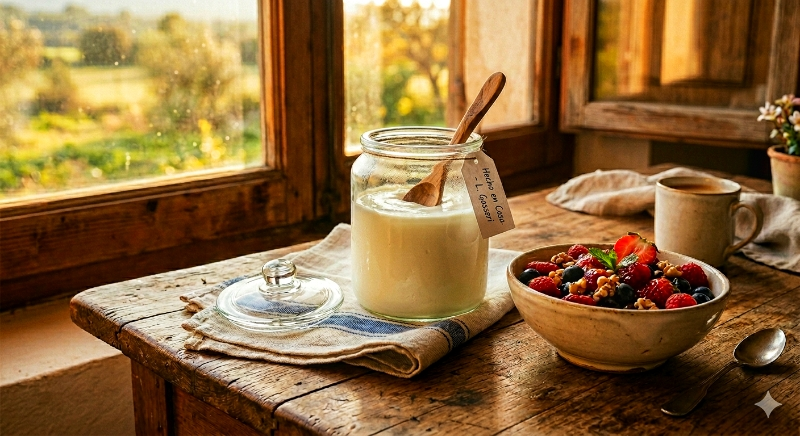
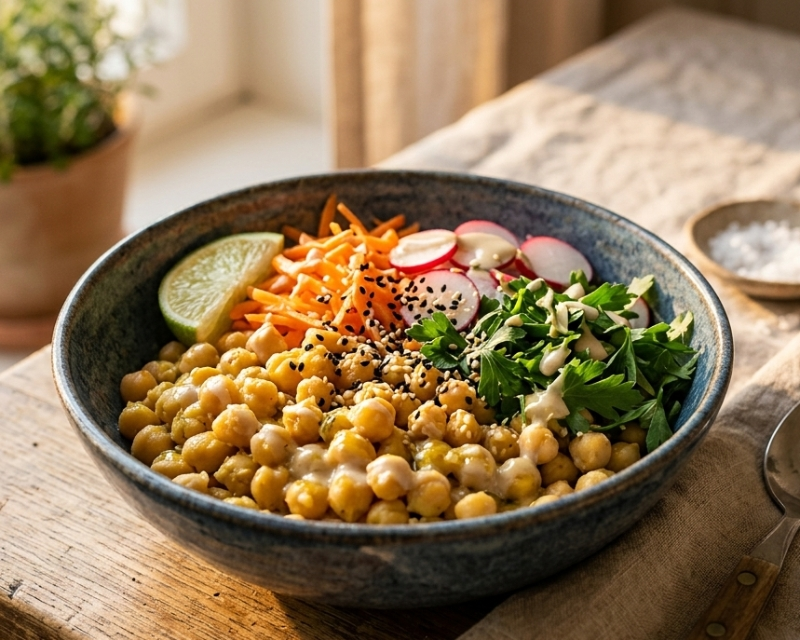
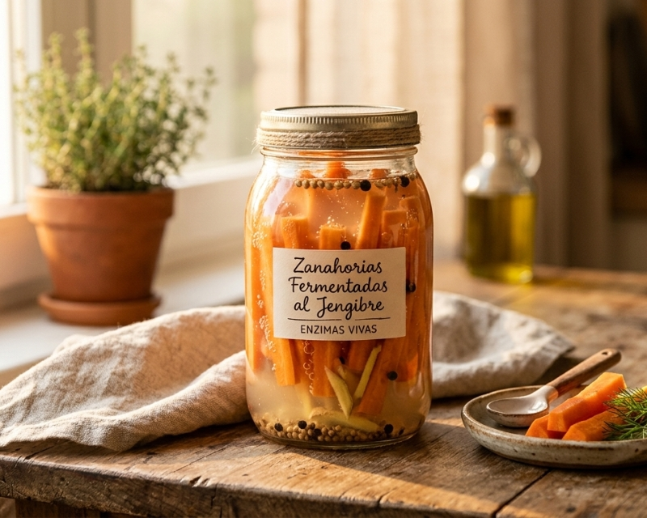
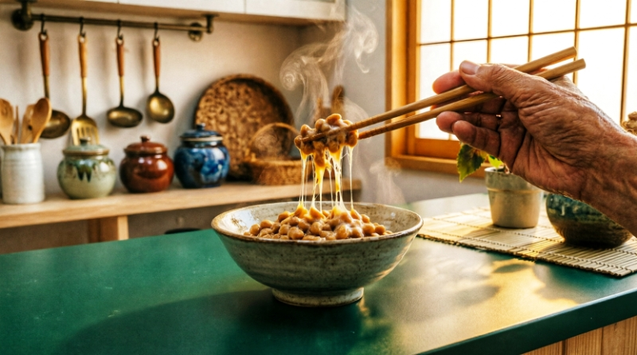
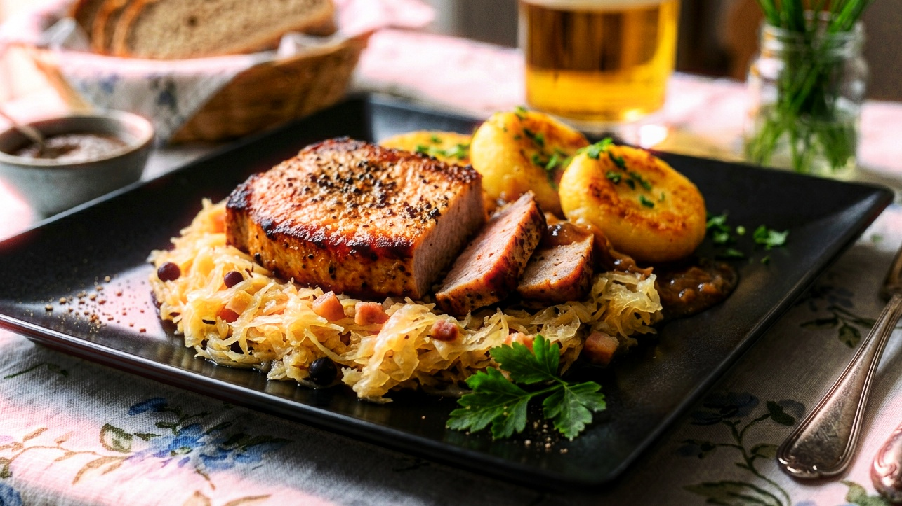

"Todo es fermentable, hasta el ketchup".
Esa cita que escuché en un video del Dr. William Davies, experto en microbioma, me impresionó.
No te compliques. Empieza con lo básico, varía con lo que te guste y experimenta.
Fermentar es un acto de soberanía sobre tu propio ecosistema interno.
Disfruta el proceso. Échale tiempo, cariño y un poco de conspiración sana. Y comparte 🌿

Fermentación láctica prolongada · 36–38 °C · 24–36 h
Leche entera · inulina · cultivo. Textura densa, sabor intenso.
Ver guía completa y método detallado →
🍵 Antes de las recetas — Una introducción imprescindible al mundo de las bebidas fermentadas: kombucha, kéfir, ginger ale, hidromiel y más →



Fermentación especial · 39–41 °C · 18–24 h
Soja, judías, garbanzos · almidón · calor y humedad.
Ver guía completa y método detallado →

Fermentación vegetal · temperatura ambiente · 3 días a 3 semanas
Col · sal · tiempo. Base viva y adaptable.
Ver guía completa y método detallado →